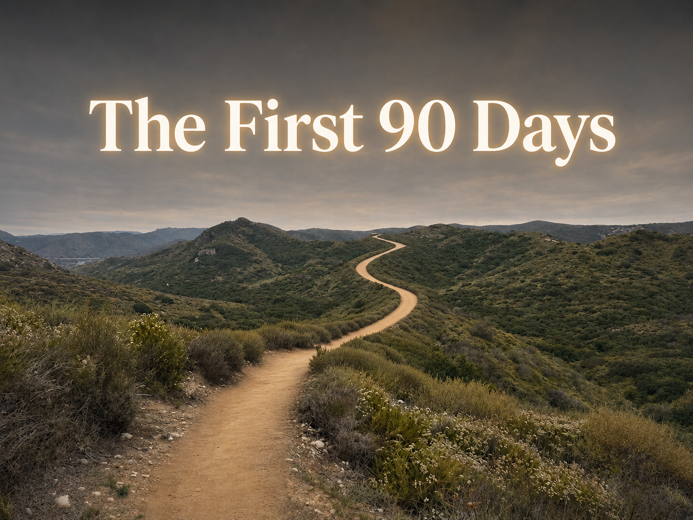
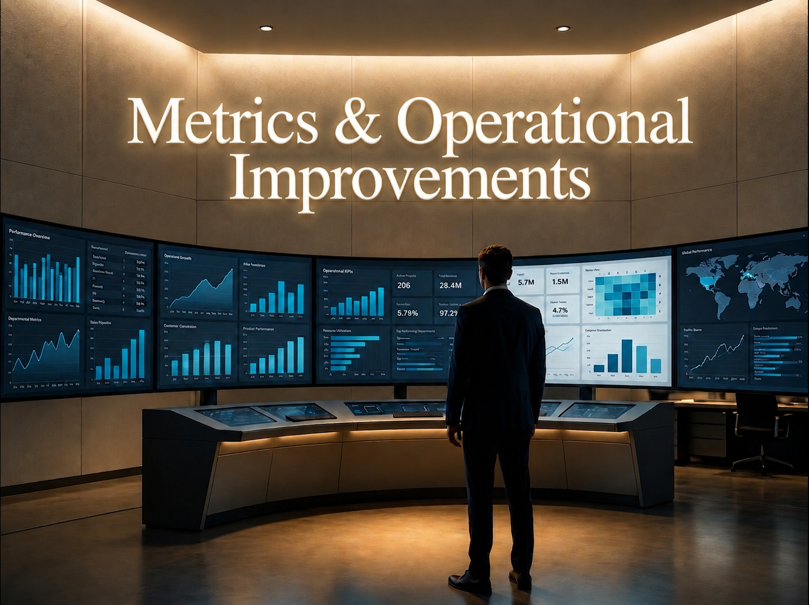

Truffle Security
A vision for the next 12-18 months
Guy Opochinski
Today's Session
Current State Analysis
Same 65 dials per day. Better engine. Double the output.

Roadmap
Structure & Growth

Measurement & Ops
Partners & Alignment
How I Lead